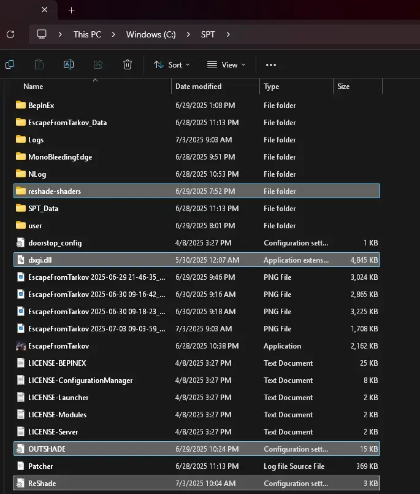
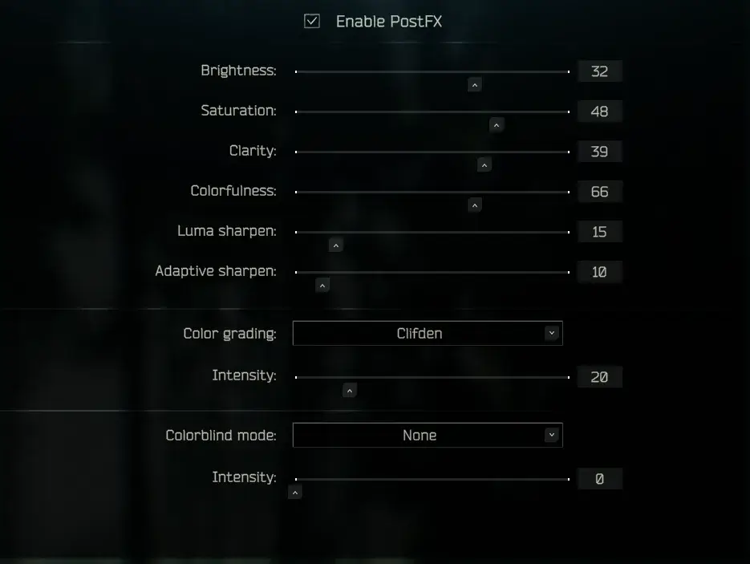
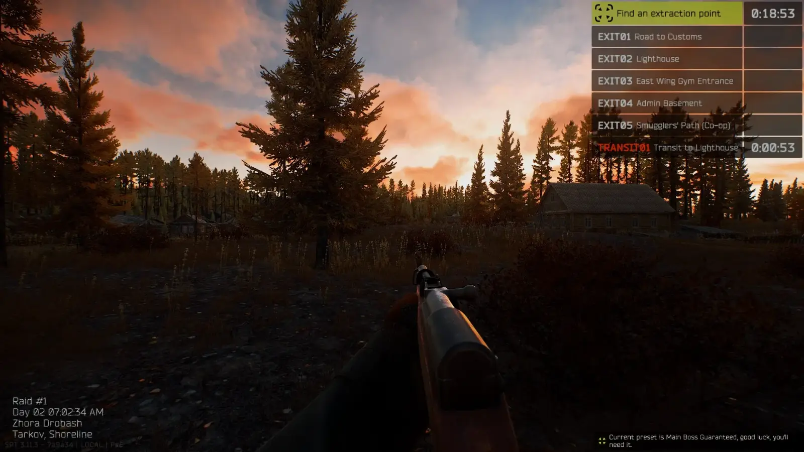
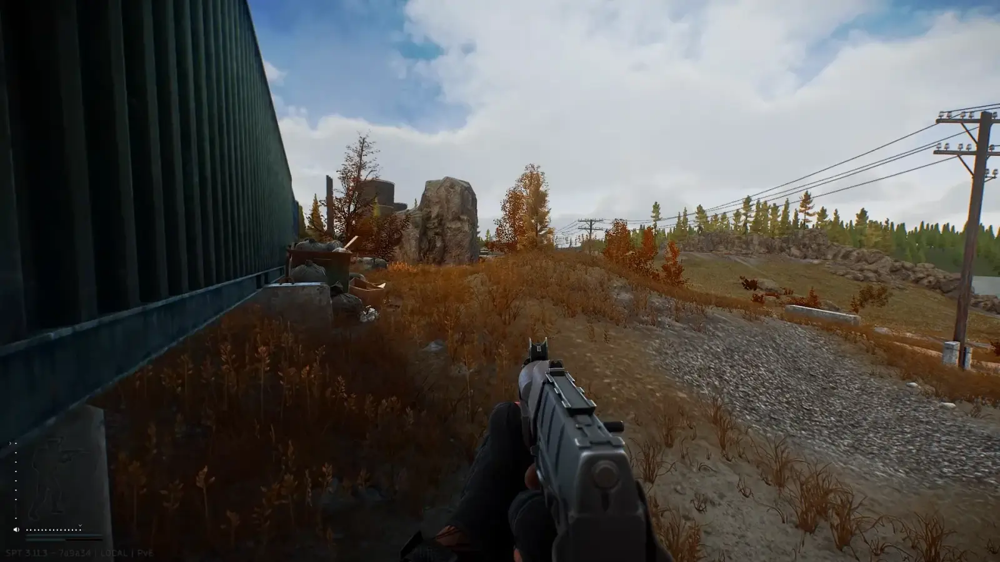
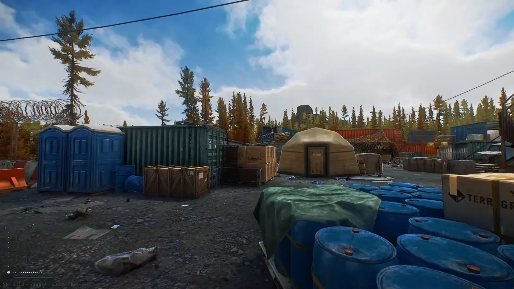

Mod
SPTShade
- Downloads
- 1,407
- Favourites
- 0
IT’S A RESHADE. PUT IT IN THE GAME’S MAIN DIRECTORY. DON’T PUT IT IN A SUBFOLDER. IF YOU PUT IT IN A SUBFOLDER YOU WILL NOT GET SUPPORT.

There’s nothing really special here. It’s a reshade preset that focuses purely on cinematics and looking pretty. Press Home to open the ReShade menu, press End to toggle the ReShade preset on/off.
Mods that I strongly recommend using with this preset:
My PostFX settings:

and some screenshots



Version
1.0.0
SPT ~3.11.0
Fika: unknown
1,407 downloadsUnknown size
No description was available in the snapshot.
nuked from forge, try source code url